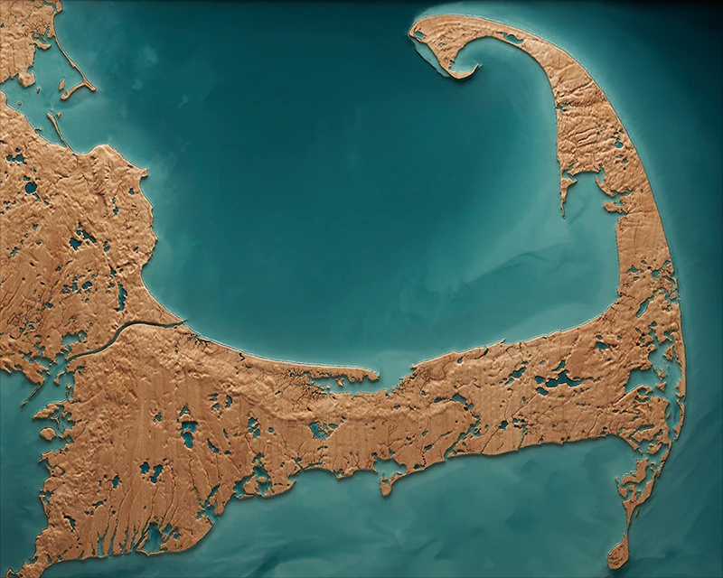

From Landscape
to Legacy
Explore
Every piece begins with a place that holds meaning.
Real terrain becomes sculptural relief, precise in form and hand-finished in craft.
Landscape, story, and art emerge.